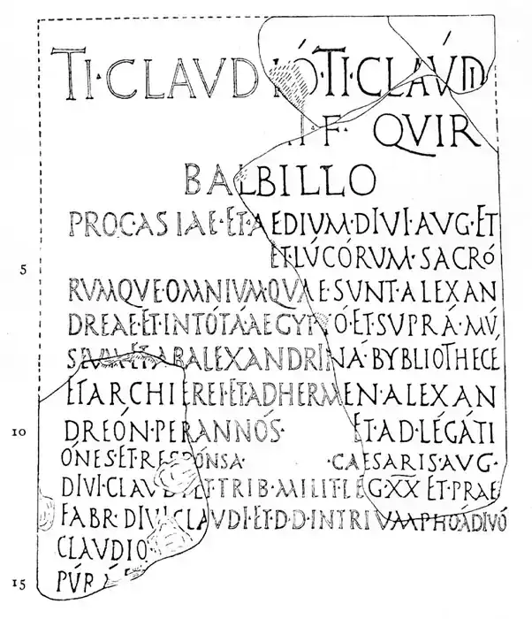
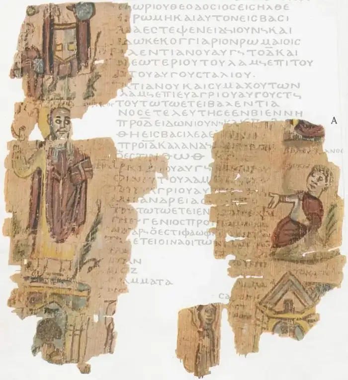

The library
The Library of Alexandria was part of the Mouseion, founded in the early third century BC under the Ptolemies. It collected texts on an industrial scale — by purchase, by copying, and according to some sources by seizing scrolls from ships — and produced scholarship: Callimachus's catalogue, Eratosthenes's geography, and work on Homer.
Maps, diagrams and images





The destruction
There is no single destruction. Caesar's fire in 48 BC damaged part of the complex; the library's decline continued through the loss of royal patronage, the expulsion of scholars, and the general decay of institutions. Later episodes — a war under Aurelian, the Serapeum's destruction in 391 AD — are sometimes cited, but the evidence for a deliberate burning of the library is thin.
The popular story, of one fire destroying all knowledge, is a moral fable about the fragility of civilisation; the historical record is slower and less dramatic.
Documented: the library, its scholarship and its decline.
Documented: Caesar's fire and later damage.
Not established: a single destruction.
The popular story: a fable.
The label: documented.
Why it is in the archive
Because it is the most-cited example of lost knowledge, and because the real history is a better warning: institutions decay slowly.
Open resources on this topic
- BookThe Library of Alexandria : centre of learning in the ancient world — 2004 (Internet Archive, free to read)
- BookThe Library of Alexandria : centre of learning in the ancient world — 2000 (Internet Archive, free to read)
- BookThe Library of Alexandria, Part 2 — Paul (From Bible) · 2021 (Internet Archive, free to read)
- PapersOpen-access articles: DOAJ · PubMed Central · Internet Archive Scholar
- BooksPublic-domain and borrowable copies: Open Library · Project Gutenberg · Google Books
More images
Cite this page
Momin, S. (2026). The Library of Alexandria. The Larger World Archive. https://drsamonline.github.io/LARGE_GLOBE/library-of-alexandria.htmlMomin, Sohil. “The Library of Alexandria.” The Larger World Archive, 2026, https://drsamonline.github.io/LARGE_GLOBE/library-of-alexandria.html.Momin, Sohil. “The Library of Alexandria.” The Larger World Archive, 2026. https://drsamonline.github.io/LARGE_GLOBE/library-of-alexandria.html.@misc{the2026library,
author = {Momin, Sohil},
title = {The Library of Alexandria},
year = {2026},
howpublished = {The Larger World Archive},
url = {https://drsamonline.github.io/LARGE_GLOBE/library-of-alexandria.html},
note = {Last reviewed 20 November 2026}
}Last reviewed 20 November 2026 · Corrections policy · this page is not peer reviewed
Sources for this page
- Wikipedia, “Library of Alexandria” — the institution and its fateen.wikipedia.org
- Wikipedia, “Musaeum” — the Mouseionen.wikipedia.org
- Wikipedia, “Serapeum of Alexandria” — the later templeen.wikipedia.org
- Wikipedia, “Papyrus” — the mediumen.wikipedia.org